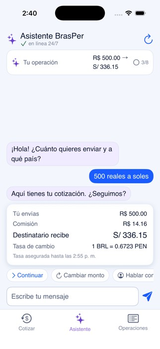

Agente conversacional
IATHON 2026 / BRASPER × 5.5
5.5
THE F*CKING 5.5
EL CAMBIO ESTÁ ABIERTO
Una operación. Más formas de llegar.
EQUIPO 5.5
CUATRO PERSONAS
UN MISMO RETO
Asistente y backend
Formulario y portal
Revisión de operaciones
Cada módulo atiende una parte
del recorrido del cliente.

CONSULTORÍA / LAS PREGUNTAS CAMBIARON EL FOCO
EL BRIEF PEDÍA FACTURAR
EL NEGOCIO PEDÍA VENDER
EL ENCARGO
Facturación y trabajo manual.
TI ya tenía su solución encaminada.
EL HALLAZGO
La mayor oportunidad estaba en ventas y en la experiencia del cliente.
Fuimos al proceso, a los chats y a los datos.
EL EMBUDO QUE HOY PODEMOS MEDIR
64 COTIZACIONES
TODAVÍA SIN TRANSFERENCIA
131chats recibidos / día
67terminan en transferencia
64quedan en cotización
Convierte el 51,1%. Falta entender por qué el resto no avanza.
Fuente: informe WhatsApp y Facebook. Promedios declarados. No equivalen a 64 ventas recuperables.
LA PROPUESTA PARA BRASPER
TRES ENTRADAS
UNA OPERACIÓN CON HISTORIA
Conversación con IA
Formulario y seguimiento
Experiencia móvil
1
registro operativo como punto de encuentro
Firebase + revisión en backoffice
Módulos del proyecto. La continuidad de identidad entre canales requiere validación.
LA CONVERSACIÓN QUE AYUDA A AVANZAR
ESCRIBE COMO HABLAS
LA IA TE ORIENTA
Entiende la intención y presenta una cotización.
LA IAConversación y orientación.
LAS REGLASImportes, datos y estados.
EL EQUIPORevisión del ingreso y excepciones.

Captura del módulo conversacional aportada por el equipo. Flow nativo pendiente.
UN CANAL QUE RECIBE SOLICITUDES A CUALQUIER HORA
EL CLIENTE AVANZA
DESDE SU PANTALLA


01 Cotiza y registra el destino.
02 Adjunta su comprobante.
03 Consulta el estado.
EL EQUIPO CONSERVA LA DECISIÓN
MENOS DIGITACIÓN
MÁS CONTROL DEL CASO

RegistradaEn revisiónAprobadaEnvío registrado
Captura del módulo interno aportada por el equipo. Los estados no acreditan ejecución bancaria automática.
EL RECORRIDO EN PANTALLA
65″
Canales, registro y revisión interna.
Recorrido técnico aportado por el equipo.
EL CRECIMIENTO TAMBIÉN EMPIEZA DE NOCHE
TU PRÓXIMO CLIENTE
NO ESPERA A MAÑANA
24/7
para cotizar y registrar la solicitud.
El equipo revisa en su horario.
+60operaciones / mes en el ejemplo
S/900contribución antes de costos adicionales
Escenario: 10 consultas nuevas/día fuera de horario × 20% × 30 días × S/15 de margen. Por validar.
EL EQUIPO PUEDE DEDICAR MÁS TIEMPO A VENDER
S/109.200
AL AÑO DE CAPACIDAD SALARIAL POTENCIAL
6 a 3ventas · S/1.700 estimados / persona
3 a 1contabilidad · S/2.000 estimados / persona
S/9.100mensuales brutos en el escenario
Capacidad para captar más y reinvertir en marketing.
Escenario de 5 puestos, no ahorro ejecutado. Antes de cargas, tecnología y transición. Reasignar personal no libera caja automáticamente.
30 DÍAS PARA MEDIR LA MEJORA
CENTRALIZAR HOY
VENDER MEJOR DESPUÉS
Conversión y tiempo por etapa.
Operaciones con datos completos.
CRM con IA y seguimiento comercial.
Flow nativo sujeto a Meta.
La integración bancaria puede ampliar la automatización.
Recuperación, alertas y desembolso automático son ampliaciones por implementar y validar.
QUE LA EXPERIENCIA ACOMPAÑE EL CRECIMIENTO
QUE LLEGUEN
QUE AVANCEN
QUE VUELVAN
OMNI by 5.5
WhatsApp + web + app. Un proceso que se puede medir.
ORGANIZADORES Y ALIADOS
EL TALENTO SE CONSTRUYE
EN COMUNIDAD
ORGANIZAN

SPONSORS Y ALIADOS


ANEXO A / APP DEL EQUIPO
LA APP TAMBIÉN
CONVERSA
Asistente móvil para orientar la cotización.
Módulo separado del portal web.
La captura muestra BRL a PEN.

ANEXO B / HIPÓTESIS DE RECUPERACIÓN
64 CONSULTAS
UNA HIPÓTESIS POR PROBAR
10%recuperación hipotética
192operaciones / 30 días
S/2.880con M = S/15, antes de costos
Primero registrar el motivo. Después probar el seguimiento.
64 × 10% × 30. No es funcionalidad entregada ni ingreso observado. No sumar con el escenario nocturno si se solapan.
Volver a la oportunidadANEXO C / LO QUE SOSTIENE EL RELATO
EL REGISTRO PERMITE MEDIR
LA INTEGRACIÓN SE VALIDA
ENTREGA WEB REVISADA
Cotización y registro sobre Firebase.
Adjunto y seguimiento por estado.
Sesión anónima en el navegador.
AMPLIACIONES
Identidad compartida y CRM.
Flow nativo y recuperación.
Pago bancario automático.
El video ilustra el conjunto modular con datos de presentación. No certifica emisión fiscal, liquidación bancaria ni continuidad entre dispositivos.
Volver al pilotoANEXO D / RESPALDO
DATOS, CAPTURAS
Y SUPUESTOS A LA VISTA
WhatsApp y Facebook131 chats, 67 transferencias, 64 cotizaciones por día. Promedios informados.
Transferencias SQL3.723 registros en el período observado. Última modificación no equivale al cierre.
Material del equipoCapturas, video, nombres y logos del PDF aportado.
Modelo económicoPlantilla 6 + 3. Sueldos y demanda fuera de horario son supuestos.